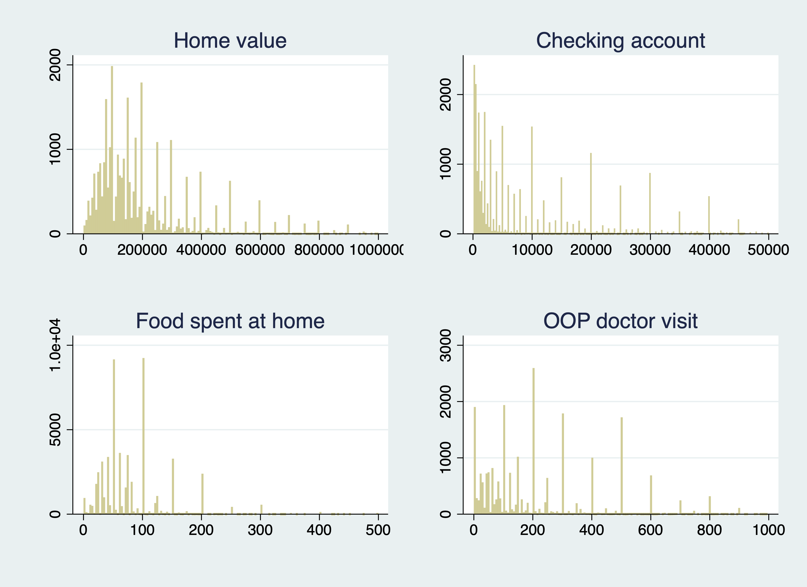
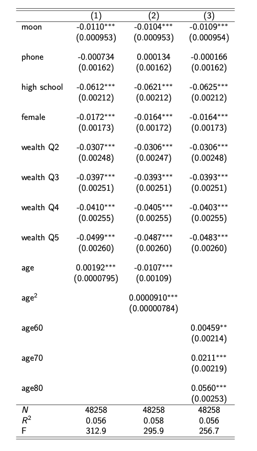
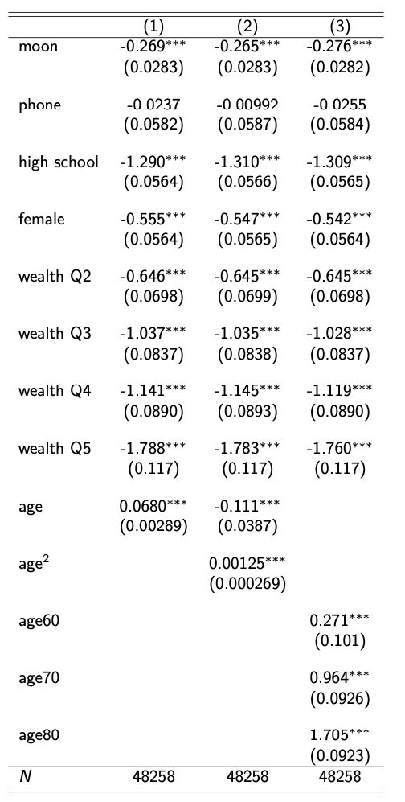
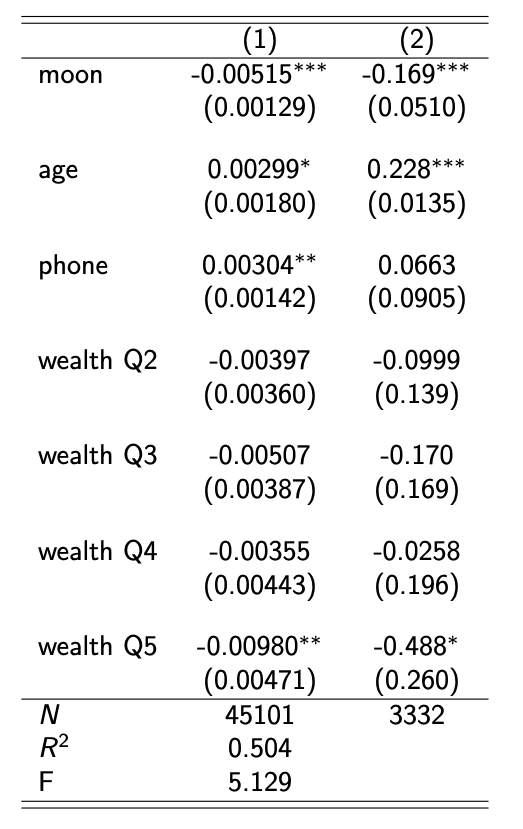

I'd like to introduce the Moon proxy
and show the initial findings
Moon (2022) propose a measure as a proxy of cognitive ability based on the response patterns of popular surveys
We focusd incomplete answers observed in open-ended questions
Motivation
- Strong patters of heaping at rounded numbers

- Respondents either provide numerical values or opt out of the question in HRS
- Providing incomplete answers are called satisficing (Krosnick 1991)
- claim that the satisficing behavior is negatively correlated with cognitive ability
- Propose a standardized method that enables cross-question comparisons in answering behavior
Characterizing the response
- Gideon et al. 2017 define the level of rounding as
- $\frac{\text{the number of total digits}-\text{the number of significant digit}}{\text{the number of total digits}-1}$
- round responses may be a consequence of satisficing
- raises the question of whether it would be sufficient to focus just on the maximal rounding
Characterizing the response
- The reductions in cognitive ability can be reflected in the completion rate (Knäuper et al. 1997)
- Ideal proxy should be responsive to the level of rounding and opt-out responses
- Divide the response format into three: opt-out, maximal rounding, and numerical answer
- assign 0,1 and 2 to each type in order
- assume that they represent the respondent's cognitive ability in that order
- After characterizing response using these three ways, take the average of themm
Data Description
- Health and Retirement Study
- focus on the household heads aged between 50 and 89, participated in 2004-2018 survey
- 62,851 individual-years, pooling 16,187 individuals across 7 waves
- only self respondents
- Question selection criteria
- open-ended questions requiring more than 2-digit
- response rate should be large enough
- the selected questions appear in multiple waves
- 7 questions are selected
Outcome of interest
- Langa-Weir algorithms apply cutpoints to derived scores summarizing cognition
- sum of tests (0-27)
- immediate word recall (0–10 points)
- delayed word recall (0–10 points)
- serial 7s (0–5 points)
- backwards counting from 20 (0–2 points)
- assign a cutpoint
- normal cognitive function (7-27 points)$\rightarrow 0$
- dementia (0-7 points)$\rightarrow 1$
Models
- Estimate the following: for respondent $i$ in survey year $t$
- $Pr(\text{demented}_{i,t}) = \beta \text{Moon}_{i,t}+f(\text{age}_{i,t})+X_{i,t}\gamma+\delta_t+\epsilon_{i,t}$
- $X_{i,t}:$ phone intervew, high school graduation, gender, wealth quantile
Linear probability model

reg demented moon phone high_school female +
i.q_wealth age, absorb(year)
Logistic regression

logit demented moon phone high_school female age +
i.q_wealth i.year
Fixed effects

reghdfe demented moon age phone i.q_wealth, absorb(year gid) vce(cluster gid)
xtset gid year
xtlogit demented moon age phone i.q_wealth , fe